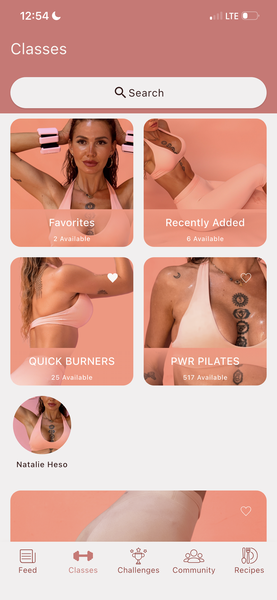
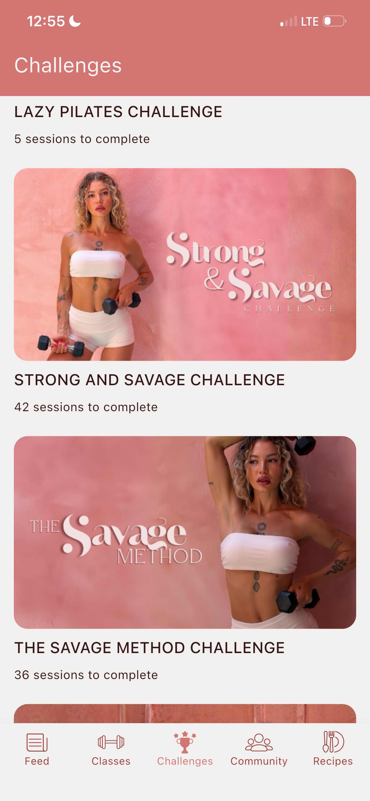
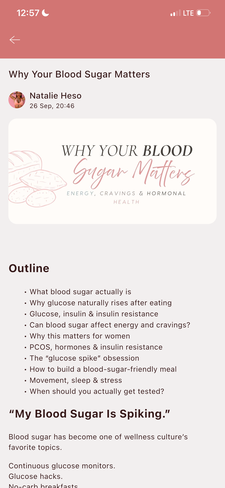
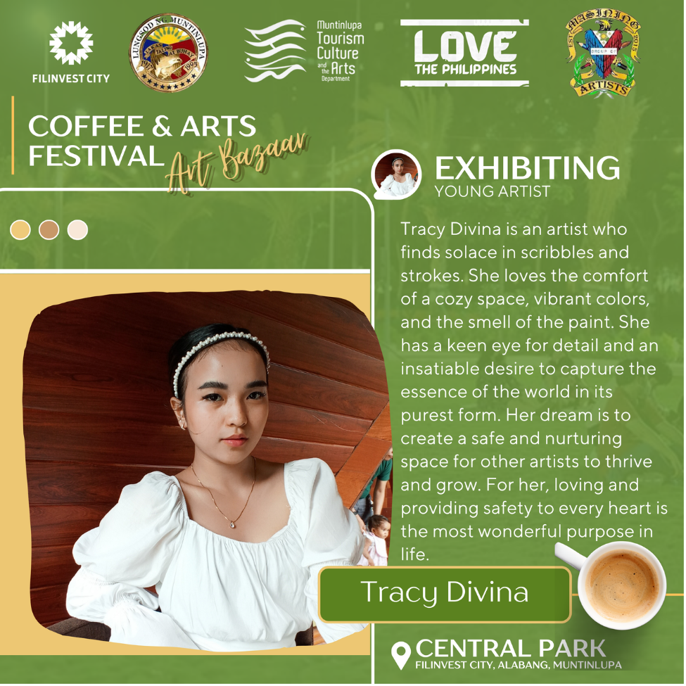
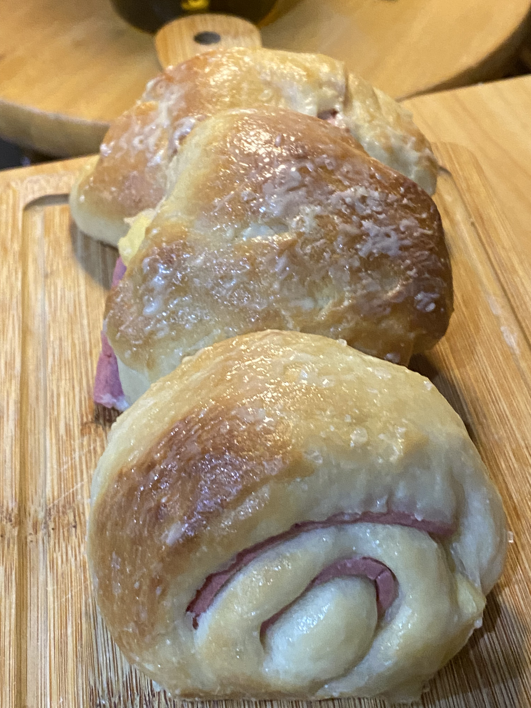

Net follows, May 1 to October 2, 2026, during regular organic content management.
Creative operations · Content · Digital systems
I bring ideas
to life.
And see them
through.
Hi, I’m Tracy. I work across design, video, content and the everyday systems behind a growing brand.
From the first creative brief to the final upload, I like understanding the whole process and helping each piece find its place.
THE PERSON BEHIND THE WORK01 / INTRODUCTION

Practical follow-through.
Creative directionVideo & contentApp operationsLaunch support
01 / FEATURED PARTNERSHIPCONTENT + CREATIVE + OPERATIONS
SAVAGE by Natalie Heso
Behind the content.
Inside the process.
My current role brings the creative and practical parts of my work together. I edit the videos, prepare the app content, support launches and help keep the next pieces moving.
Explore the case study


A few milestones
Work with
something to show.
A few results from my current partnership. Each reflects a specific period or campaign, alongside the wider work of the brand.
Subscribers in the first month of our partnership, with consistent short-form repurposing.
691 clicks from 1,880 sends in one keyword-triggered challenge campaign.
02 / Selected work
Different formats.
The same care.
A selection of the design, editing and digital work I bring into a project. Open a collection for the details.
03 / How I contribute
Creative instincts.
Practical habits.
I’m comfortable moving between making the asset and preparing everything around the asset. Here’s what this looks like day to day.
Brand & creative assets
Challenge identities, covers, carousels, emails and campaign materials.
Video & content production
Recipes, workouts, speaking videos, teasers and short-form edits.
App & digital operations
Content uploads, categories, schedules, descriptions and member communication.
Workflow & handoff
Batching, review, training and practical instructions for the next person.


A little beyond the job titles
Curiosity follows me
outside work, too.
Art, baking, music and learning to code. I enjoy making things, paying attention to the details, and getting a little better with practice.
Get to know me